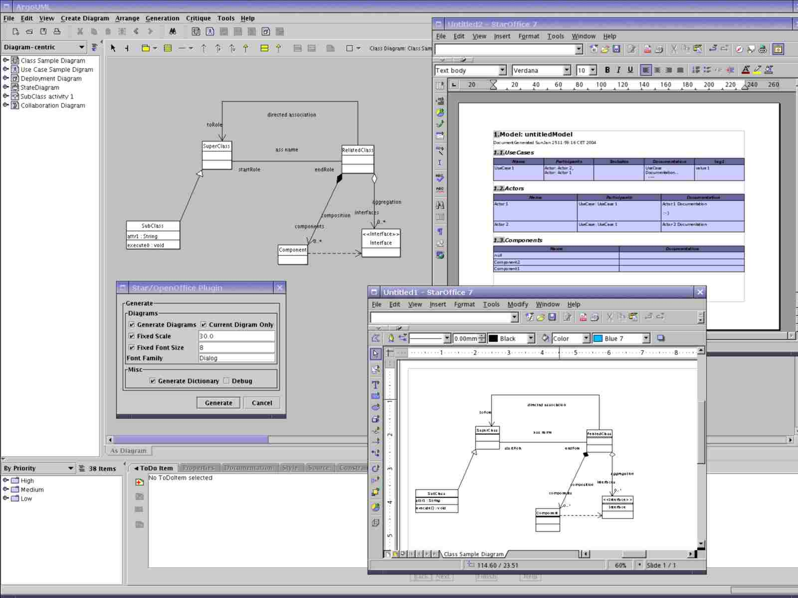

The argosoffice project aims to create a plugin for ArgoUML to generate
documentation using Star/Openoffice.
Download
Current version of argosoffice is 0.3-20080205. Please read the README for installation and configuration instructions.
This is a new version for ArgoUML 0.25.4+ and OpenOffice 2.3+.
It is still of ALPHA quality, with regressions in the generation of diagrams and text documents. However the code is now compliant with today's ArgoUML code and i will now work on improving the documents generation.
L.Maitre (a.k.a. rastaman), current maintainer of the plugin.
Screenshot
Here's a screenshot of argosoffice in use:

Mission
What is the goal of this project?
- Develop a plugin for ArgoUML to generate documentation using Star/OpenOffice
What is the scope of this project?
- Use the APIs provided by Star/OpenOffice and generate documentation from ArgoUML diagrams.
What are high-level features you are sure to build?
- Generate Star/Open-Office Drawings of all UseCase and Component Diagrams
- Generate Star/Open-Office Writer Document with a dictionary of UseCases and Components
What are the high-level assumptions or ground rules for the project?
- The argusoffice plugin is written in Java
Limitations
- The plugin assumes the port 8100 for Star/OpenOffice. This will be configurable in future versions.
- The Star/Open-Office Plugin can generate all the different types of
digrams supported by ArgoUML. Rounded Rects are not supporte yet so
State diagrams will not look correct. Fill color support is not fully
implemented which will generate strange colors on some figs.
The Dictionary is still only generating a dictionary for Use Cases/Actors
and Deployment diagram Components.
Related resources
- ArgoUML - Open source Modelling Tool
- StarOffice - Office Package based on OpenOffice
- OpenOffice - Open Source Office Package
- OpenOffice/StarOffice SDK - The OpenOffice.org SDK provides the necessary tools and documentation for programming the OpenOffice.org APIs and creating own extensions (UNO components) for OpenOffice.org.